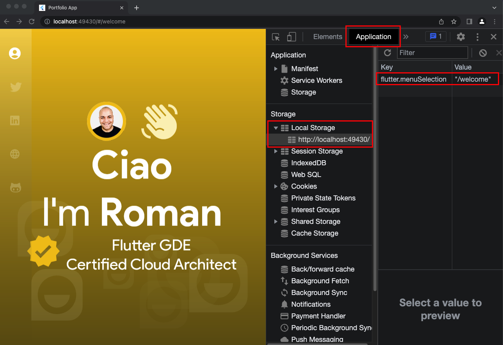
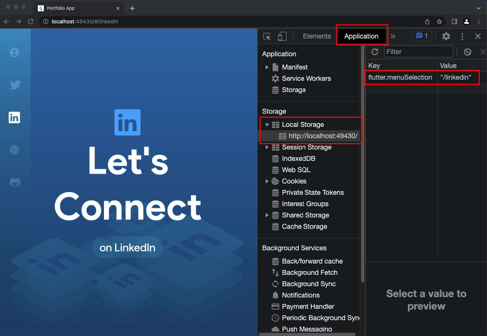
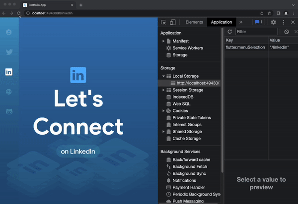
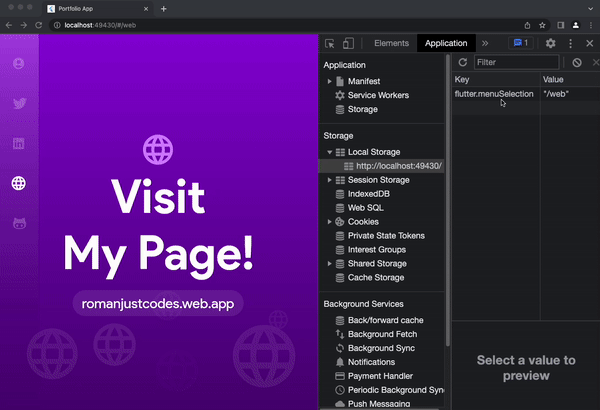

Welcome to the exciting world of Flutter Web! In this codelab we'll learn how to tap into your browser's local storage to store non-critical data - in our case, we'll persist the last navigated page so we can restore it when the user reloads the page.
In this codelab, we'll accomplish the following:
We'll use the shared_preferences package for this.
The SharedPreferences package wraps platform-specific persistent storage for simple data. See in the table below what the SharedPreferences implementation defaults to for each individual platform underneath the hood:
Platform | Location |
Android | SharedPreferences |
iOS | NSUserDefaults |
Linux | In the XDG_DATA_HOME directory |
macOS | NSUserDefaults |
Web | LocalStorage |
Windows | In the roaming AppData directory |
Let's proceed!
Let's go ahead and install the required packages.
In the command line at the root of the project, run this command:
flutter pub add shared_preferences
This will install shared_preferences and add the required entries to the pubspec.yaml.
In order to consume the SharedPreferences around a strategy such as Riverpod, we'll create a few providers that wrap its implementation in order to support dependency injection, testability and mocking.
In the lib/shared/providers/shared_providers.dart file, add the following provider (with the required imports):
//... rest of the code omitted
final sharedPrefsInstanceProvider = Provider((ref) {
return SharedPreferences.getInstance();
});
The call to SharedPreferences.getInstance() returns a Future of SharedPreferences, but since we won't be consuming this from the UI, we can settle for a simple Riverpod Provider, that way we can read it from inside another provider or repository.
Now, let's go to the lib/services folder and add a new file called localstorage.service.dart, and add the following code (plus imports):
class WebLocalStorage {
final Ref ref;
WebLocalStorage(this.ref);
static const String menuSelection = 'menuSelection';
late SharedPreferences prefs;
Future<bool> initLocalStorage() {
Completer<bool> localStorageCompleter = Completer();
ref.read(sharedPrefsInstanceProvider).then((sp) {
prefs = sp;
localStorageCompleter.complete(true);
});
return localStorageCompleter.future;
}
void storeSelectedNav(String route) {
prefs.setString(WebLocalStorage.menuSelection, route);
}
String getSelectedNav() {
return prefs.getString(WebLocalStorage.menuSelection) ?? '';
}
}
Let's dissect this code.
We created a class called WebLocalStorage, which receives a reference of type Ref via its constructor.
We created a static variable called menuSelection with a value of the same name, since that will be the key that we'll be maintaining inside local storage, and instead of hardcoding it everywhere we created this property so we can refer to it later. This is the key that will hold the value in local storage corresponding to the selected page route in the navigation. We'll get to that in a minute.
A method called initLocalStorage() that returns a Future<bool> to denote whether the preferences were loaded correctly, and holds a reference of the SharedPreferences in a property called prefs.
A getter (getSelectedNav()) fetchs the associated value from local storageof the menuSelection key; if null, it will return an empty string, otherwise it brings the stored value, and a setter (storeSelectedNav) which takes corresponding route selected by the user and stores it in local storage.
Back in the shared_providers file, add a provider wrapping our newly created WebLocalStorage service, as such:
//... rest of the code omitted
final webLocalStorageProvider = Provider((ref) {
return WebLocalStorage(ref);
});
Now, we need to determine who will call the initLocalStorage() method. I'd say let the navigation feature handle this as well, as is the one at the moment who depends on the preferences being initialized.
Let's do some refactoring, shall we?
In the LeftNavigationViewModel class (file features/navigation/presentation/viewmodels/leftnavigation.viewmodel.dart), first, remove the logic that always selects the first item in the list of navigation items from the constructor (we'll add it someplace else):
//... remove this code from the constructor:
var item = state.first;
selectNavItem(item);
Your updated constructor should look as such:
LeftNavigationViewModel(List<LeftNavigationItem> items, this.ref)
: super([]) {
state = items;
}
Let's proceed and add a method called init() with the following content:
//... in the leftnavigation.viewmodel.dart
void init() {
var selectedNavRoute = ref.read(webLocalStorageProvider).getSelectedNav();
if (selectedNavRoute.isNotEmpty) {
var item = state.where((i) => i.route == selectedNavRoute).first;
selectNavItem(item);
}
else {
selectNavItem(state.first);
}
}
The init() method will be called upon the shared preferences being loaded (we'll call it in a minute - let's assume it is loaded and this method gets called).
In this method, we read the webLocalStorageProvider and invoking its getSelectedNav() method, which returns the currently selected navigation route (if any), and hold it in a local variable called selectedNavRoute.
If the value is not empty, we proceed to auto-select the corresponding navigation item by leveraging the selectNavItem method, passing the LeftNavigationItem instance that matches the stored route, otherwise we'll select the first one by default - when it's the first time loading the app, or if the user manually deletes the local storage entry.
Proceed now to the selectNavItem() method, which is where we will trigger the storing of the corresponding page route upon the user selecting a navigation item.
Anywhere before resetting the state, add the following line:
ref.read(webLocalStorageProvider).storeSelectedNav(item.route);
This is a straightforward call - we store the corresponding route from the selected item navigation item by reading the webLocalStorageProvider provider, calling on the storeSelectedNav() method, passing the currently selected route - simple as that.
Ok, let's get back to who's gonna call the initialization method.
Let's go to the features/navigation/presentation/widgets/left_navigation.dart widget, and convert it to a ConsumerStatefulWidget, since we want to leverage the initState() lifecycle method - that's where we'll initialize the shared preferences.
Do the refactoring and make sure your updated left_navigation.dart file looks like this after the refactoring:
class LeftNavigation extends ConsumerStatefulWidget {
const LeftNavigation({super.key});
@override
ConsumerState<LeftNavigation> createState() => _LeftNavigationState();
}
class _LeftNavigationState extends ConsumerState<LeftNavigation> {
@override
Widget build(BuildContext context) {
//... rest of the code here
}
}
In the _LeftNavigationState state class, override the initState() lifecycle method and add the following code:
//... add the initState()
@override
void initState() {
super.initState();
ref.read(webLocalStorageProvider).initLocalStorage().then((value) {
ref.read(navigationItemsViewModelProvider.notifier).init();
});
}
Let me explain what we did. In the initState() of the navigation widget, we call the initLocalStorage() on the WebLocalStorage service by reading its provider (webLocalStorageProvider), followed by the init() method of the LeftNavigationViewModel, which allows us to load the shared preferences upfront, then after ensuring a successful load, we can start pulling data from it (in the init() method).
Let's take this for a spin for a minute.
Load the Flutter web app and navigate to any page; do it a couple of times to other pages.
Assuming you're using Chrome as your previewing device, open the Chrome Developer tools, navigate to the Aplication tab; on the left hand side, find Storage > LocalStorage. Click on the localhost entry of your currently running web app.

Notice then on the right hand side an entry for the currently selected route (a key named flutter.menuSelection with a value named /welcome). Click a few times and notice this value change accordingly.

Reload the Flutter web app on any page other than the welcome page, just to prove the app will restore the last selected route.

And voilá! That's shared preferences for you! We are able to load from local storage the persisted route, and just as it is expected by our users, we bring them back to the last page they visited.
Go ahead - test by deleting the local storage entry - it should behave as expected: redirect you to the welcome page. Neat!

And with that, we're done with this codelab for this workshop, where we accomplished the following:
The complete code is available on Github by following this link.